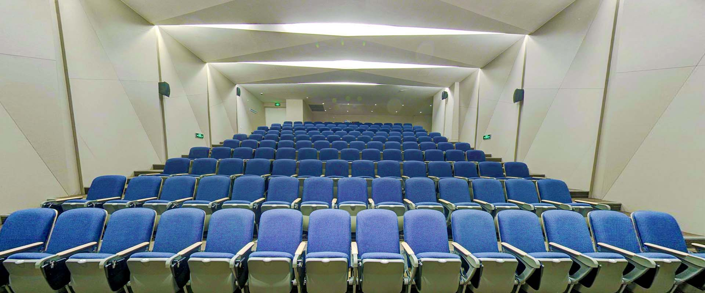

About Rate BIPH
What this site is for
This isn’t a place to curse teachers. It’s a place to share opinions, honestly and specifically, so the next class of students can pick courses with their eyes open.
Be specific: what the teacher does well, where the class is hard, how the homework actually feels. “Sucks” tells nobody anything. “Tests are short but every question is a synthesis problem” tells the next student what to expect.
Reviews that cross from opinion into personal attack get hidden. The bar isn’t “is this nice”; it’s “is this the truth, said respectfully.”
